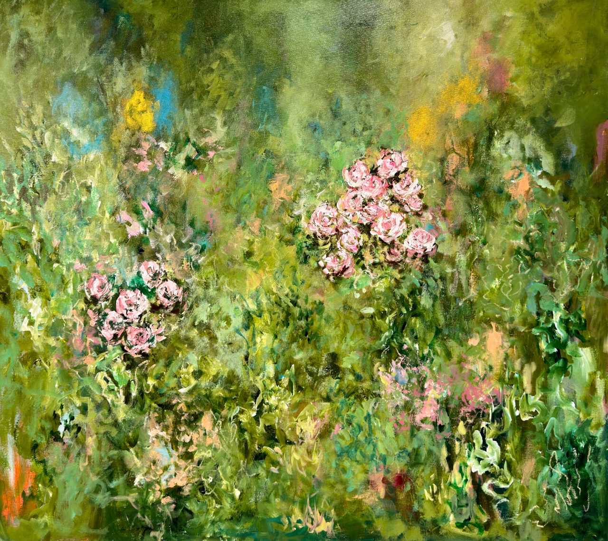
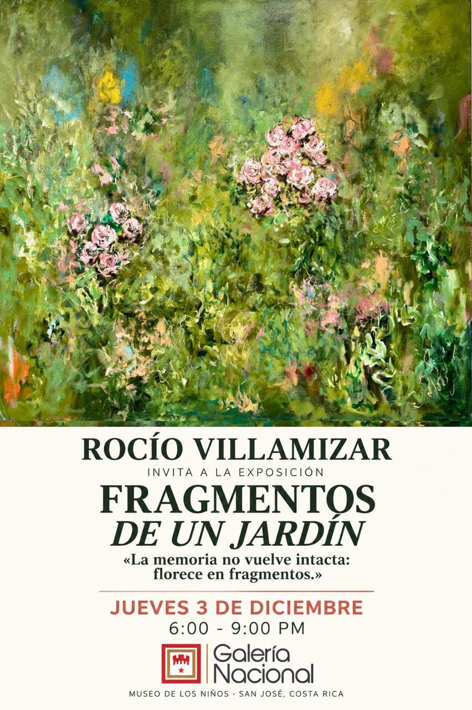
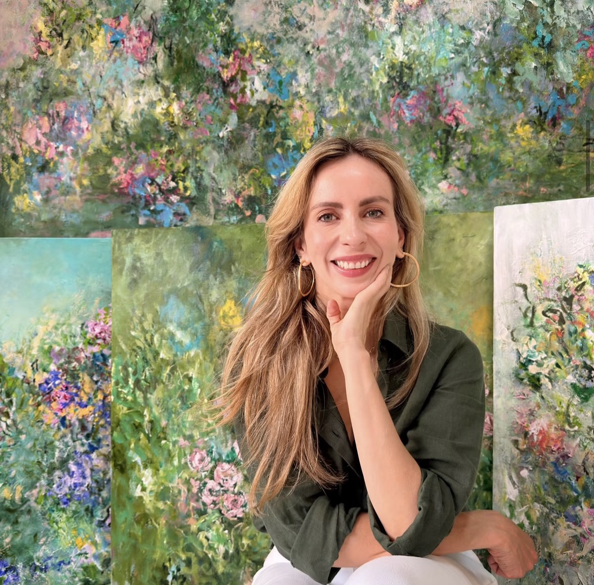

Nature as the language of emotion.
RosalRocío Villamizar
Portfolio
Selected works.
An exploration of nature, memory and color.

Next exhibition
Fragmentos de un jardín
“Memory does not come back whole: it blooms in fragments.”
- When
- Thursday, December 3, 2026 · 6:00 to 9:00 p.m.
- Where
- Galería Nacional, Museo de los Niños · San José, Costa Rica
It is not what you see. It is what you feel.
Rocío VillamizarIn your space
See it on the wall before it arrives.
You can see every work in a space like yours: the living room, the stairs, the bedroom, the dining room. Change the setting, the size and the frame, and move it along the wall until it finds its place.
Choose a work
The artist
Emotional landscapes.
I am a Colombian–Costa Rican visual artist with more than 18 years of artistic practice. Nature is the central axis of my work: through it I explore memory, the passage of time and the human capacity for transformation.
More than representing a landscape, I want to awaken sensations and offer a space for contemplation.
My storyThe garden
An exhibition in the open air.
Walk between hedges and flowers, with the morning sun and the shade of the trees on the paintings.
Enter the garden